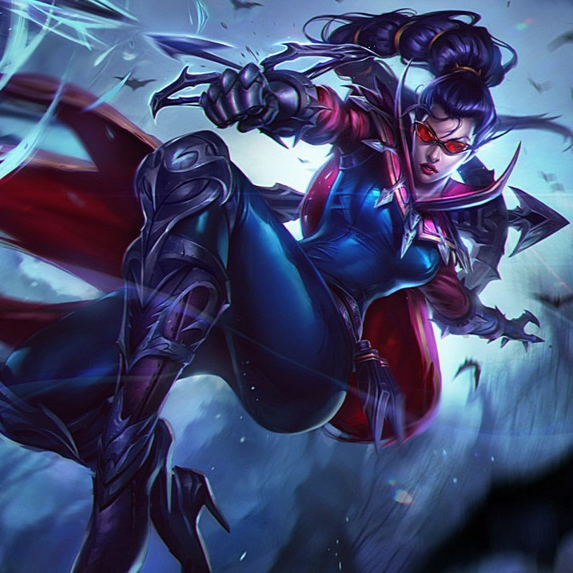

Sin embargo, con muchos campeones de MID pasa lo contrario, por ejemplo con Yasuo que va 0/20 te tira la Q + R y se marca un 1vs5
| Línea | Campeones | Opiniones |
|---|---|---|
|
La línea de ADC lleva ya varios años en los que no influye mucho en el resultado de la partida, puedes ir 20/0 que te viene cualquiera te deletea y terminas la partida en pantalla gris. Sin embargo, con muchos campeones de MID pasa lo contrario, por ejemplo con Yasuo que va 0/20 te tira la Q + R y se marca un 1vs5 |
|
|  |